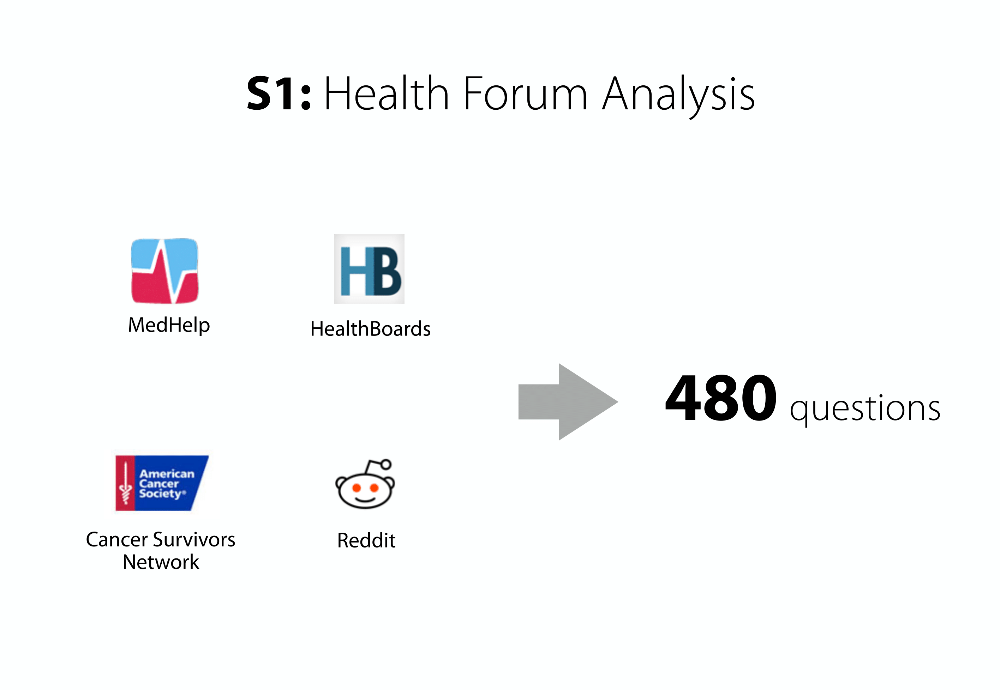
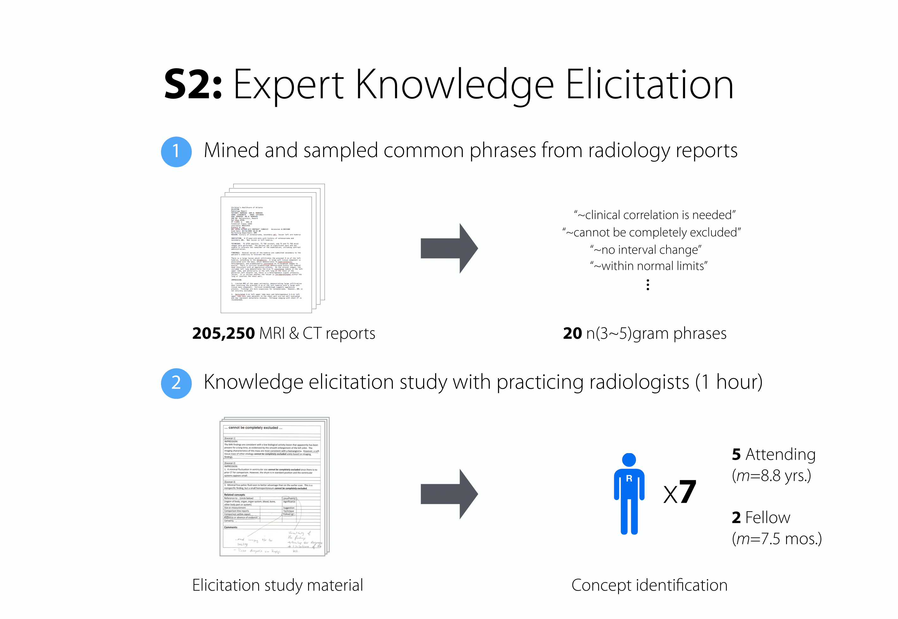
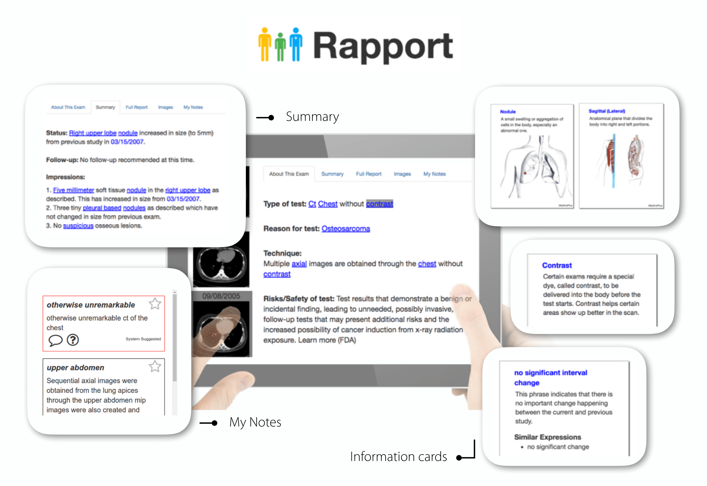
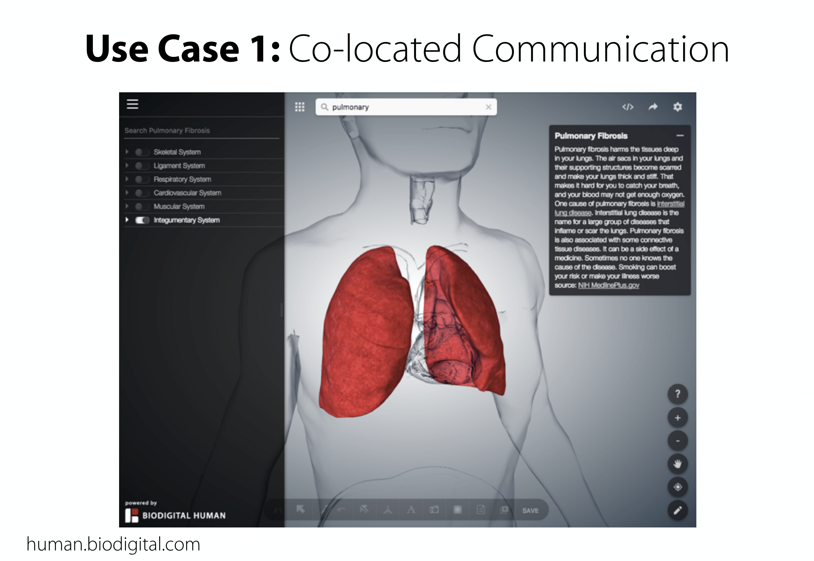

Team

Lauren Wilcox Matt Hong Clayton Fuestel Chaitanya Bapta
Since the early 1920s, just about 20 years after the invention of x-ray, radiology reports mainly exist to support communication between the interpreting radiologist and a referring physician, in a highly technical manner. Following the passage of the Health Information Technology and Clinical Health (HITECH), diagnostic radiology reports are increasingly being made available to patients and their family members. However, these reports are not typically comprehensible to lay recipients, impeding effective communication about report findings.
How can we design tools to improve medical communication about radiology imaging studies for patients and their family members? To answer this question, our research team worked hard over the past year to understand the needs of chronically ill patients and iteratively designed a mobile application to meet their specific needs. In our first attempt to share this tool with a broader audience, we introduce Rapport, an interactive patient-centered radiology report designed to support patient families in reviewing and communicating about radiology studies with their oncologist.
Two studies informed the design of Rapport.
When people have questions that are not addressed in the clinic, they’ll ask them somewhere else. We found many of these questions in online health forums. We began our research by conducting a content analysis of 1600 posts from 4 online health forums to gauge current patients’ information needs related to imaging studies. This analyses informed the design of content structure and types of information to include in the prototype. Next, we sought to understand the range of common concepts embedded in the language used by radiologists who write these reports. To do this, we applied text-processing techniques to identify commonly-occurring phrases (n-grams) from 205,250 unstructured CT and MRI reports, and then validated their meaning with 7 practicing radiologists.

Rapport is able to provide a contextualized selection of report content to associate content fragments with questions and discussion topics. We can present high-resolution 3D illustrations on the fly and give instant access to consumer friendly explanations from trusted medical resources.

Lauren Wilcox Matt Hong Clayton Fuestel Chaitanya Bapta